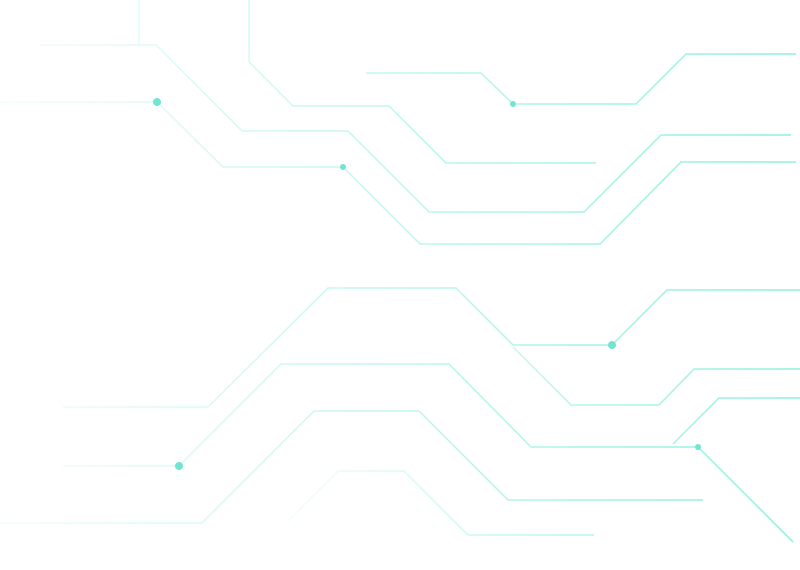
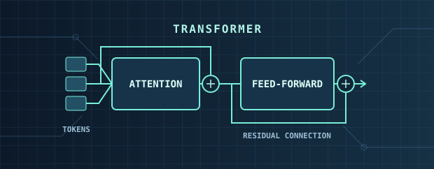
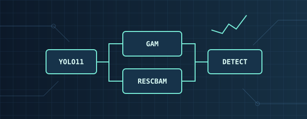
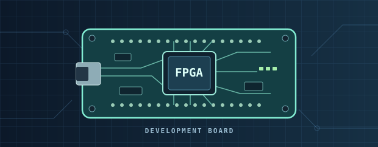
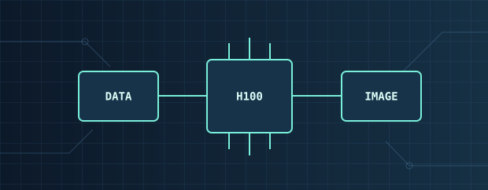

DIGITAL IC DESIGN PORTFOLIO
賴敬予
Jing-Yu Lai
深度學習、數位晶片設計與嵌入式系統
我從小就喜歡拆解電子產品，想弄懂電路和程式如何配合，讓裝置運作。這份好奇心讓我走進電子工程，也成為我把模型做成硬體的起點。
我設計過 SwinIR 影像超解析與 BloodMNIST 卷積加速器，實作了 16 位元多週期 RISC 處理器，也把量化的人臉辨識模型部署到 Arty A7 的 RISC-V SoC 上。從模型量化、RTL 設計到時序分析與板端驗證，我用模擬結果和量測數據檢查設計是否達到目標。
ENGINEERING WORK
工程作品總覽
選擇分類，查看設計方法、量測數據與可開啟的原始資料。
 01
01RTL & FPGA DESIGN
晶片與 FPGA 專題
從 RTL 資料路徑、片上記憶體到板端推論與合成驗證。

02RESEARCH PROJECTS
研究計畫與大學專題
SwinIR 超解析、無人機多光譜影像與建物裂縫辨識。

03PAPER & ARCHITECTURES
論文與模型架構
ICETA 2025 Best Paper Award、YOLO11 改良與注意力模組。

04ENGINEERING COMPETITIONS
競賽與實作展示
FPGA 競賽決賽、邊緣人臉辨識原型與 IC 設計競賽。
05
EDUCATION & HONORS
學歷、獎項與訓練
臺科大與淡江成績、TOEIC 英文檢定、獎項與 TSRI 課程。

06COLLABORATION & CAMPUS
企業合作與校園參與
H100 生成式影像模型開發與校園活動經驗。
DESIGN TOOLKIT
設計與驗證工具
Verilog、SystemVerilog、UVM、VCS、Verdi、Design Compiler、Innovus、Vivado、Vitis HLS、Python 與 PyTorch。